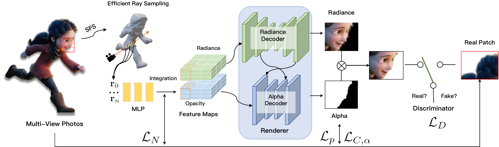

Photo-realistic modeling and rendering of fuzzy objects with complex opacity is critical for many immersive VR and AR applications, yet remains challenging because of strong view-dependent brightness and color variation. We propose Convolutional Neural Opacity Radiance Fields, a scheme that combines explicit opacity supervision with convolutional decoding in the neural radiance field framework to generate globally consistent appearance and alpha mattes in arbitrary novel views. Our method introduces efficient sampling along both camera rays and the image plane, volumetric feature integration for per-patch hybrid embeddings, and a patch-wise adversarial training strategy to preserve high-frequency appearance and opacity details in a self-supervised setting.

Given multi-view RGBA images, we first use shape-from-silhouette to infer proxy geometry for efficient ray sampling. For each sample point in volume space, position and viewing direction are fed to an MLP-based feature prediction network to model the object globally. We then concatenate nearby rays into local feature patches and decode them into RGB and matte with a convolutional volume renderer. Finally, an adversarial training strategy on the rendered output encourages faithful fine-scale surface and opacity details.
This work was supported by NSFC programs (61976138, 61977047), the National Key Research and Development Program (2018YFB2100500), STCSM (2015F0203-000-06), and SHMEC (2019-01-07-00-01-E00003).
@INPROCEEDINGS {9466273,
author = {H. Luo and A. Chen and Q. Zhang and B. Pang and M. Wu and L. Xu and J. Yu},
booktitle = {2021 IEEE International Conference on Computational Photography (ICCP)},
title = {Convolutional Neural Opacity Radiance Fields},
year = {2021},
volume = {},
issn = {},
pages = {1-12},
keywords = {training; photography; telepresence; image color analysis; computational modeling; entertainment industry; image capture},
doi = {10.1109/ICCP51581.2021.9466273},
url = {https://doi.ieeecomputersociety.org/10.1109/ICCP51581.2021.9466273},
publisher = {IEEE Computer Society},
address = {Los Alamitos, CA, USA},
month = {may}
}